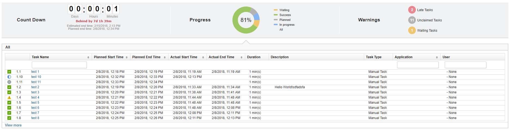

This article was originaly published in 2018.02.15
6.2.2.2 - February 15, 2018
This release of IBM UrbanCode Release is a maintenance release and includes various bug fixes and enhancements. This release is recommended for all customers.
Deployment History Cleanup
Permanently delete deployments that are greater than a specified number or days old either manually or on a schedule.
Max Deployment Duration
Limit deployments so their end time that cannot exceed a specified number of days from their start. You can also clean up deployments based on their end date by aborting in progress deployments and permanently deleting unstarted deployments, either manually or on a schedule.
More Tasks View Extra Timing Columns
This feature allows you to see a tasks planned and actual values for it’s start and end times as well as it’s description on the more tasks view.
You can enable this setting by adding feature.more.tasks.view.extra.columns=yes to the installed.properties.
